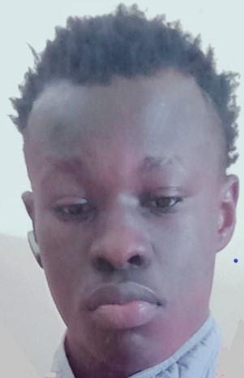

Christopher Aguko
David Masika
Stanley Mwangi

Am Christopher Aguko Otieno, a highly motivated student and soon to be a graduate with Bachelor in Education Science with IT
Main Specialization in teaching Mathematics and Computer Studies.
Background
I was born in Nyanza region on 23rd of December in the year 2002.
Am a dedicated, organised and methodical individual. I have a good interpersonal skills, excellent team worker, keen and very willing to learn and develop new skills.
Am reliable and dependable and often seek new responsibilities within a wide range of employment areas.
My Objectives
I have an active and dynamic approach to teach, to identify and develop opportunities for my students.